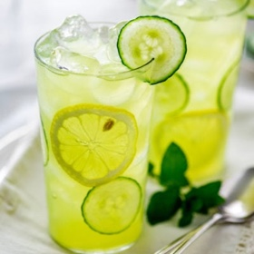

← All recipes
Cucumber Lemonade

Servings: Servings: 4 servings · Prep: 15 mins · Cook: 5 mins
Ingredients
- ¾ cup sugar
- 2 cups water
- 2 cups cucumber juice *see notes below
- ¾ cup lemon juice
Directions
- Making simple syrup. Combine water and sugar in a pot and place over medium heat. Cook until sugar has dissolved then let cool.
- Combine simple syrup, cucumber juice and lemon juice then refrigerate until cold.
- Serve over ice with lemon and cucumber slices.
Notes
To make cucumber juice, peel about four regular or two English cucumbers, then cut it in half a scoop out the seeds. Coarsely chop the cucumber and puree in a blender. Strain the puree through a fine mesh sieve. Keep refrigerated until ready to use.
If you’re like me and like to use vintage pitchers, always be careful to not put hot simple syrup into the pitcher. It may crack!
I like my lemonade strong because I like a lot of ice in my drinks. If the flavor is too strong, add more water to taste.
Mint is a great addition to this recipe!
Original source: vintagekitty.com